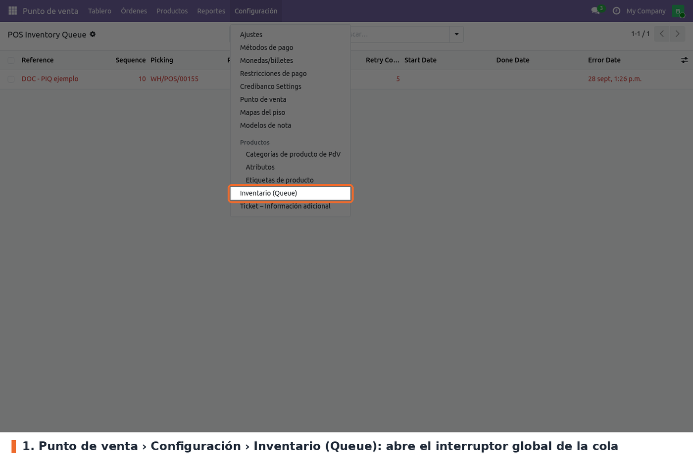
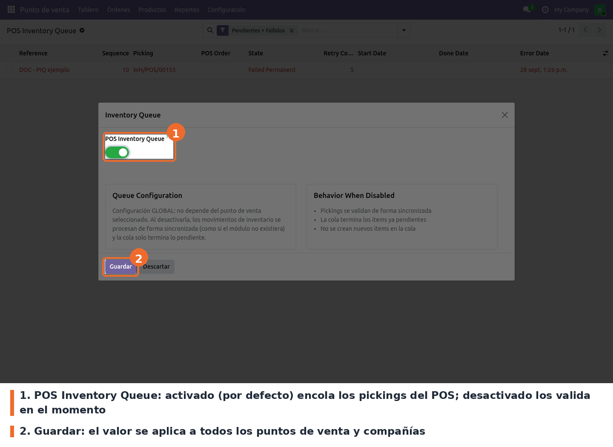
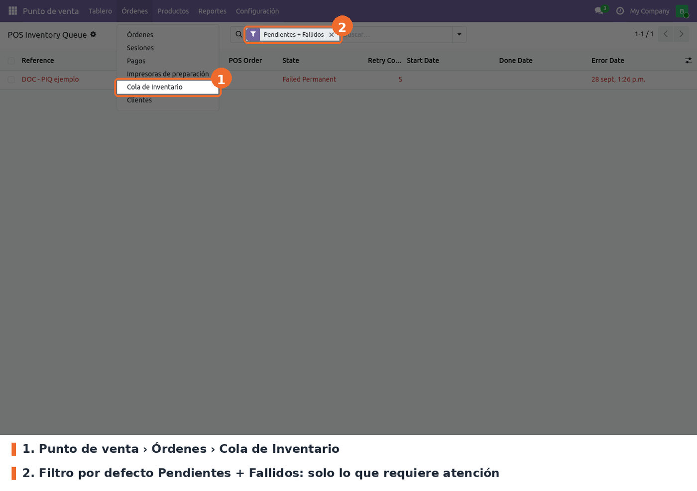
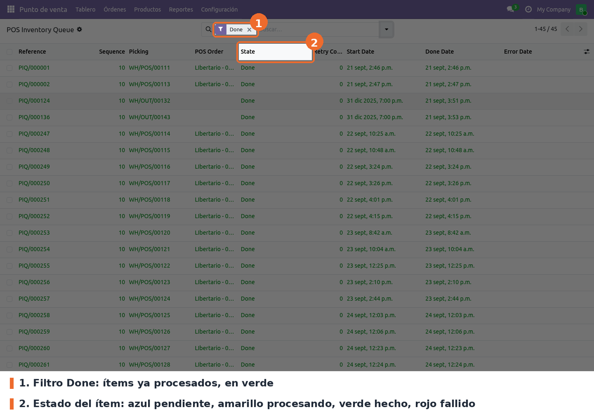
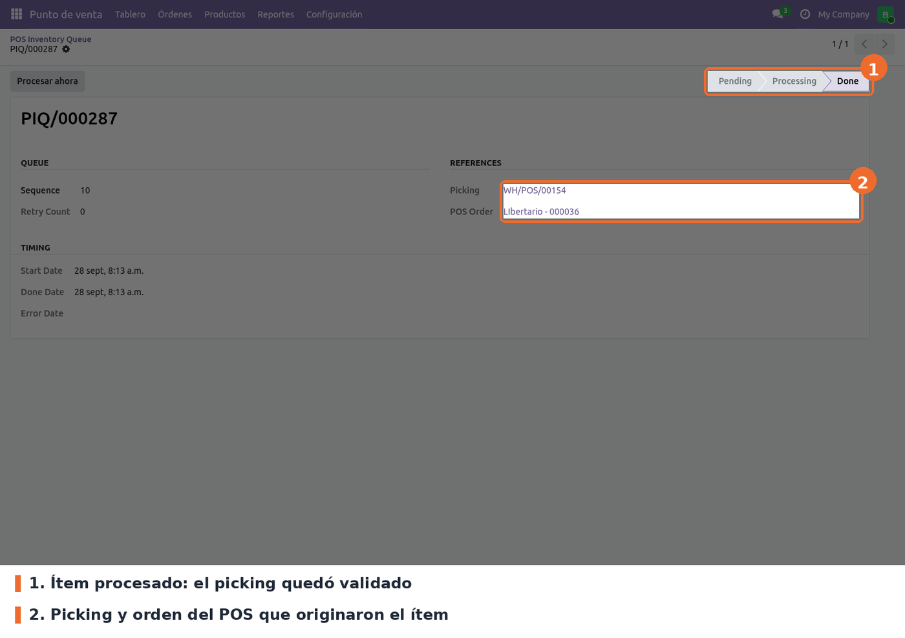
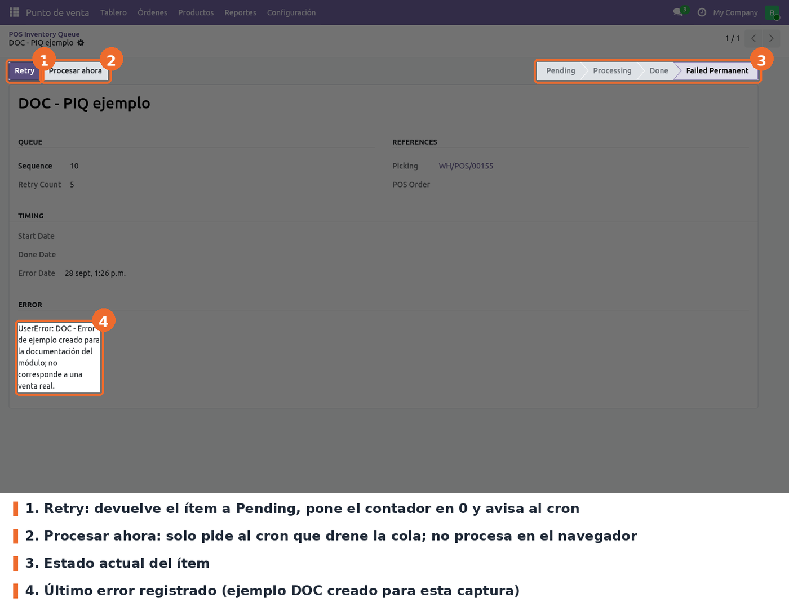

Saca la validación de inventario de las ventas del Punto de Venta fuera de la petición del cajero y la procesa en una cola persistente, un picking a la vez por producto. Así varias cajas pueden vender el mismo producto al mismo tiempo sin chocar en la base de datos.
Sin el módulo, con inventario en tiempo real, cada venta valida su picking (_action_done())
dentro de la misma petición que registra la orden. Cuando dos cajas tocan el mismo producto a la
vez, PostgreSQL devuelve errores de serialización o de bloqueo; además, el core de Odoo atrapa los
UserError/ValidationError de esa validación y los descarta en silencio, y el picking queda sin
validar.
Con el módulo, la venta solo crea el picking y deja un ítem pending en la cola, en la misma
transacción de la orden. El worker de cron valida después cada picking, con bloqueos por producto y
compañía, reintentos y registro del error si falla. Los fallos quedan a la vista en
Punto de venta › Órdenes › Cola de Inventario, y la sesión no se puede cerrar mientras quede
inventario sin validar.
La cola se enciende y apaga con un interruptor global, activado por defecto.
point_of_sale (Odoo 19 Community). No hay dependencias externas ni librerías de Python
adicionales.Instalar el módulo desde Aplicaciones. Crea el modelo de la cola, su secuencia (PIQ/000001),
dos acciones planificadas, el parámetro del sistema pos_inventory_queue.enabled con valor True
y los menús Órdenes › Cola de Inventario y Configuración › Inventario (Queue). Desde ese momento
la cola queda activa: no hace falta configurar nada más para que funcione.
El procesamiento depende de las acciones planificadas, así que el servidor tiene que correr con el planificador de tareas habilitado (workers de cron).
El módulo conserva el mismo nombre técnico y los mismos campos que en 17. Al actualizar desde la
versión 17.0.1.2.1 se ejecuta migrations/17.0.2.1.0/pre-migrate.py, que agrega la columna
next_retry_date a pos_inventory_queue solo si no existe; se puede ejecutar más de una vez sin
efecto. Los datos de acciones planificadas, secuencia y parámetro están en noupdate="1": una
actualización no pisa el valor del interruptor ni los cambios hechos a los cron.
Respecto de 17 se retiraron tres piezas: el bloqueo de numeración de facturas
(account_move._set_next_sequence, que en Odoo 19 ya resuelve el core), el pool de conexiones
propio (ahora el drenaje corre en el worker de cron) y la vista en Ajustes, que en 17 no estaba
cargada en el manifiesto. Se agregaron la guarda de cierre de sesión, el reintento diferido
(next_retry_date) y la alerta de fallo permanente.
Ir a Punto de venta › Configuración › Inventario (Queue). Se abre una ventana con un único interruptor.

Punto de venta › Configuración: menú Inventario (Queue)

Ventana Inventory Queue: interruptor POS Inventory Queue y botón Guardar
pos_inventory_queue.enabled). Opcional;
activado por defecto, y si el parámetro no existe el código también lo toma como activado.
Activado, las ventas crean el picking y lo encolan. Desactivado, cada venta valida su picking en
el momento, como Odoo estándar, y no se crean ítems nuevos. Los ítems que ya estaban en la cola
se siguen procesando igual: el procesador drena siempre, esté o no activado.A tener en cuenta:
security/ir.model.access.csv, el grupo
Administración / Ajustes tiene todos los permisos sobre esta ventana; el Administrador del
Punto de venta solo puede leerla.done
con más de 30 días. No hay que tocarlas; si se desactiva la primera, la cola solo avanza cuando
una venta o un botón dispara el cron.El cajero no hace nada distinto: vende y cobra como siempre. Lo que cambia ocurre en el servidor:
PIQ/000NNN. Si la venta tiene productos a entregar y devueltos, crea
un picking y un ítem para cada parte.Para ver la cola, ir a Punto de venta › Órdenes › Cola de Inventario. Abre con el filtro Pendientes + Fallidos, que muestra solo lo que necesita atención; si la lista está vacía, no hay nada atrasado.

Punto de venta › Órdenes › Cola de Inventario, con el filtro por defecto (la fila es el ejemplo DOC)
Quitando el filtro, o eligiendo Done, se ven los ítems procesados. El color de la fila indica el estado.

Lista de la cola con el filtro Done

Ítem procesado: estado Done, picking y orden del POS de origen
Abrir el ítem desde la lista. La sección Error muestra la excepción y la traza, y Retry Count cuántos ciclos lleva. Corregir la causa en el picking o en el producto y pulsar Retry.

Ítem en Failed Permanent con los botones Retry y Procesar ahora (ejemplo DOC)
lock_not_available), se reintenta hasta 5 veces con esperas cortas, de hasta
0,8 segundos. Si sigue chocando, el ítem vuelve a Pending sin sumar ciclos de fallo, y queda
el detalle en Error Message.POS Queue: PERMANENT. El código
intenta además crear una actividad para los gestores de inventario, pero en Odoo 19 esa alerta
no se crea (ver Limitaciones conocidas).POS Queue: summary reason=... elapsed=... done=N contention=N failed=N permanent=N._notify_permanent_failure busca los
usuarios con ('groups_id', 'in', ...), pero en Odoo 19 el campo de res.users se llama
group_ids. La búsqueda falla, el except lo captura y solo queda en el log la línea
POS Queue: PERMANENT no se pudo crear la alerta. Además la actividad se crearía sobre
pos.inventory.queue, que no hereda de mail.activity.mixin. Hoy la única señal de un fallo
permanente es el log y la lista de la cola (QA_PREPRODUCCION_19, PIQ-2).total_cost de las líneas justo
después de _create_order_picking(), cuando la cola todavía no validó el picking. Con productos
FIFO o AVCO, el costo sale de esos movimientos aún sin validar; QA lo reporta en 0 (PIQ-1). Si
producción usa esos métodos, hay que verificarlo en staging._create_order_picking reemplaza al del core sin llamar a super(). Es copia del de Odoo
17 y no incluye dos ramas que agregó Odoo 19: la devolución de una orden de envío posterior, que
en el core usa el flujo de pickings, y la escritura de sesión, orden y origen en los
backorder_ids (PIQ-5)._process_queue corre hasta 240 segundos por pasada. Si
el límite real de los cron del servidor (limit_time_real_cron) es menor, el worker puede morir
antes y dejar un ítem en Processing hasta el reclamo de 5 minutos (PIQ-6, verificar en
producción).pos.session.queue_pending_count y action_view_queue_items no
aparecen en ninguna vista. El override de stock.move._get_related_invoices no tiene llamador en
el fuente de Odoo 19 Community (solo lo extienden sale_stock y purchase_stock), y su
comentario menciona stock_valuation_layer, que ya no existe en 19.active dice que los ítems se archivan, pero la
limpieza semanal los borra (unlink). El filtro Archived de la búsqueda solo encuentra ítems
archivados a mano.static/description/icon.png: en Aplicaciones se ve el ícono genérico de Odoo.models/inventory_queue.py: el modelo pos.inventory.queue. Reclamo de ítems, procesamiento
en cursor aparte, bloqueos, reintentos, disparo del cron, alerta, botones y limpieza. Constantes:
MAX_RETRIES = 5, CLAIM_MAX_RETRIES = 10, STALE_PROCESSING_MINUTES = 5,
LOCK_TIMEOUT_SECONDS = 5.models/inventory_queue_config.py: la ventana del interruptor (pos.inventory.queue.config,
transitorio), que lee y escribe pos_inventory_queue.enabled.models/pos_order.py: _create_order_picking con el contexto pos_inventory_queue=True, que
es lo que activa la cola.models/stock_picking.py: _create_picking_from_pos_order_lines crea los pickings sin
_action_done(), los encola y dispara el cron. Con la cola apagada o sin el contexto delega en el
core.models/pos_session.py: la guarda de cierre en _validate_session.models/stock_move.py: _get_related_invoices (ver Limitaciones conocidas).data/: secuencia PIQ/, las dos acciones planificadas y el parámetro del interruptor, todo en
noupdate="1".views/: lista, formulario y búsqueda de la cola, y la ventana del interruptor con sus menús.migrations/17.0.2.1.0/pre-migrate.py: columna next_retry_date (ver Instalación).tests/test_queue_model.py: 19 pruebas TransactionCase sobre secuencia, duplicados, reclamo,
next_retry_date, orden de proceso, reclamo de Processing vencido, cierre de sesión, limpieza
y botones.tools/: dos scripts de carga independientes (test_pos_inventory_concurrency.py y
test_pos_invoice_concurrency.py) que crean pickings u órdenes concurrentes contra una base real
y verifican stock y estados. No forman parte de la suite de Odoo y tienen IDs por defecto de otro
entorno: revisar sus parámetros con --help antes de usarlos.ir.cron._trigger() queda escrito en esa misma transacción. La cola
nunca confirma ni revierte la transacción de la venta._claim_next_item usa SELECT ... FOR UPDATE SKIP LOCKED y marca Processing en el
cursor del cron, que confirma antes de procesar para soltar el bloqueo de la fila. Por eso
_process_queue solo debe llamarse sobre un cursor descartable (cron, tests o scripts), nunca
desde una petición con trabajo propio sin confirmar.SUPERUSER_ID y la
compañía del picking, en un savepoint. Al empezar cada intento repite SET LOCAL lock_timeout
(5 s), porque un rollback lo borra, y toma pg_advisory_xact_lock por cada par (producto,
compañía), en orden ascendente para evitar interbloqueos entre workers.create devuelve el ítem existente si el picking ya está en cola, y la
restricción UNIQUE(picking_id) junto con un savepoint cubre la carrera entre dos peticiones.
Si el picking ya está hecho, el ítem se marca Done sin revalidar. Retry sobre un ítem que no
está fallido no hace nada. El índice parcial pos_inventory_queue_claim_idx se crea con
IF NOT EXISTS en cada instalación o actualización.next_retry_date = ahora + 2^n
minutos y Failed Permanent al quinto ciclo. Un error de conexión deja el ítem en Processing
para el reclamo por vencimiento; si el pool de conexiones está agotado, el ítem vuelve a Pending
y esa pasada termina.